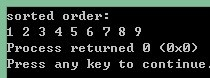

插入排序（Insertion Sort）是一种简单直观的排序算法。它的工作原理是通过构建有序序列，对于未排序数据，在已排序序列中从后向前扫描，找到相应位置并插入。插入排序在实现上，通常采用in-place排序（即只需用到O(1)的额外空间的排序），因而在从后向前扫描过程中，需要反复把已排序元素逐步向后挪位，为最新元素提供插入空间。[1]
 [2]
[2]
先来看插入排序的步骤：
首先假设第i个元素已经有序；
第i+1个原始抽取出来作为参考，于是i+1位置可看作空位；
把第i+1个元素左边的元素（即第1到i个元素）依次从右向左与第i+1个元素相比较，若比i+1大，向后挪一个位置；
上面排完之后数列中还剩一个位置，把之前抽取出的第i个元素补上。
i将数组循环遍历，重复以上过程。
下面用实例来说明。
原始数列为：
|3|5|2|4|7|9|8|1|6
|-|
我们假设3为有序数列，已经排好。所以从5开始。只需要看3和5两个数。5抽取出来，由于3比5小，数列不变。
接下来3、5有序，只需看3、5、2三个数。2抽取出来，由于5比2大，所以5向右挪一个位置，即覆盖2刚刚的位置；3比2大，3向右挪一个位置，即覆盖最初5所在的位置；2补上空位，即第一个位置。得：
|2|3|5|4|7|9|8|1|6
|————|————|
同理，继续下去，4抽取出来，只需看2、3、5、4四个数。得：
|2|3|4|5|7|9|8|1|6
|————|————|
后面的依次类推。
c++实例代码如下：
1 |
|
结果：

下面来分析插入算法的时间复杂度：
最坏的情况，是逆序。比较次数O(n2),移到次数也是O(n2)，所以时间复杂度是O(n2)。
最好的情况，正序。比较次数O(n)，交换次数为0，所以时间复杂度是O(n)。
插入排序不适合对于数据量比较大的排序应用。但是，如果需要排序的数据量很小，例如，量级小于千，那么插入排序还是一个不错的选择。 插入排序在工业级库中也有着广泛的应用，在STL的sort算法和stdlib的qsort算法中，都将插入排序作为快速排序的补充，用于少量元素的排序（通常为8个或以下）。[3]
[1][2][3]插入排序维基百科